Himalayan Highs - Five Stops in Uttarakhand
(Haridwar, Rishikesh, Mussoorie, Nainital and Jim Corbett)
We left home after our dinner around 9. We booked a cab for the airport. The cab driver continuously was jumping the red signals of Nagras Road, Parihar Chowk, Bremen Chowk, etc. Also, he drove in the lane meant exclusively for buses on Alandi Road. Nowadays engaging a cab through Uber and traveling seems to be risky. Fortunately, we safely reached the airport. Security check was more vigilant than the usual one. Air India flight AI2608 was at the right time. Departed at 12:40. At 1 am, they served dinner also. Roti, potato sabji, and a cake were served with coffee.
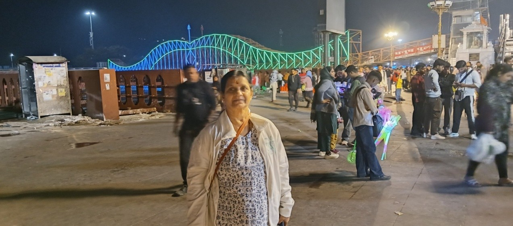
Travel duration from Pune to Delhi was 1 hr 40 minutes. The flight reached 15 minutes earlier than the scheduled time. We collected our bags and took rest in the airport until 5 am.
Then the Veena representative called us and we boarded the bus to Haridwar. Haridwar is about 200 km away from Delhi. The highway was good, but the 20-seater bus was not very comfortable. These small buses don't have proper shock absorbers. On the way at a hotel, we had a breakfast of idli, paratha, and coffee. We reached Haridwar around 10:30 am. Just before entering the city, we crossed the Patanjali complex, where Ramdev Baba stays. We saw lots of huge buildings like medications, yoga, and healthcare including coaching for IIT entrance exams in that complex.
Our accommodation was arranged in a hotel called Classic Residence. The room was good. Food was also okay. After lunch, we took rest until 4 pm. Then we proceeded to see the Ganga Aarti by the same bus.
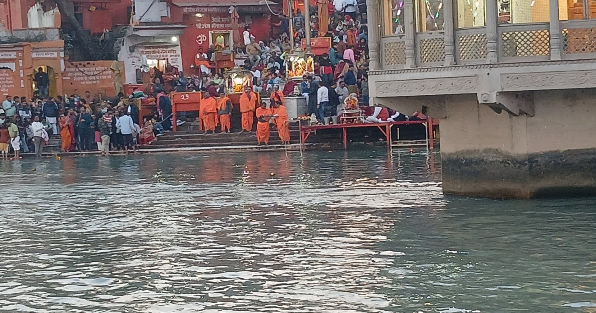
I do remember I had come to this place with my parents when I was a school-going child. From the parking place, we walked through the narrow market lane and reached the ghat and sat on the Ganges river bed steps. This place was moderately crowded. This aarti takes place every day just before sunset. The ghat is called Har Ki Pauri. After the initial pooja by pandits, they play the famous Ganga aarti song by Anuradha Paudwal and do the aarti. This aarti duration is about 10 minutes. Then we returned back to the bus and reached the hotel. Had dinner around 8:30. Being the winter season, the weather was pleasant and we had a good sleep.
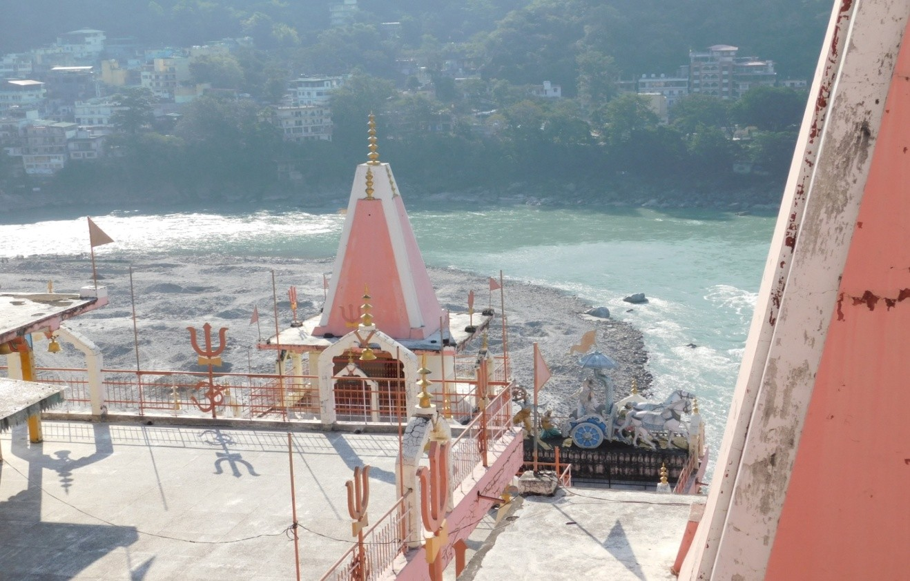
We got ready by 7 am and had our breakfast at the hotel. We started to proceed to Rishikesh around 8 am. It is an hour's journey from Haridwar, around 25 km away. We reached Rishikesh around 9 am. We got down at Tapovan, then we visited the Badrinath Kedarnath temple. It's a small temple. Here separate deities for Kedarnath (Shiv Ling) and Badrinath (Shalikram) are there. This temple foundation was laid by Jayendra Saraswathi Shankaracharya in 1986.
Next, we visited the Sita Ram Dham temple. The main deity in this temple is Sita Devi. This temple is located close to the Ganges. From this temple, we can see the clean Ganges river flowing through. Next, we visited the Radha Krishna Mandir. The main deities are Radha and Krishna. They kept two mirrors parallel to each other and we can see the infinity images of Radha & Krishna. Also, a large-sized Hanuman deity is seen at the entrance of the temple.
Then we were taken to a shop where Rudraksha and Spatika Mala are sold. The shop owner gave an hour's lecture about the great curing effects of these. The price range was from Rs 3000 onwards, but no one purchased any item. Then we went to the Lakshman temple.
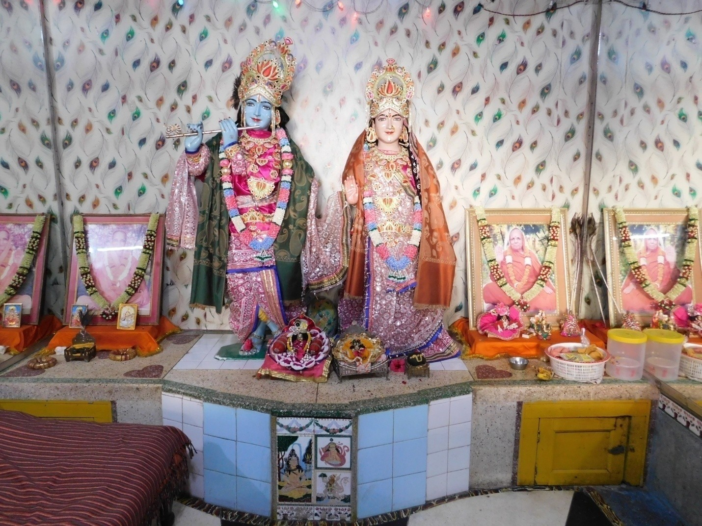
Perhaps this may be the single temple in the whole country for Lord Lakshman. A lone deity is there in this temple. Then we crossed the Ganges through a hanging bridge. In earlier days, the Lakshman Jhula bridge was in use. Now that is not used, as one of the strings was broken. Adjacent to Lakshman Jhula, a new hanging bridge called Hanuman Bridge is in use.
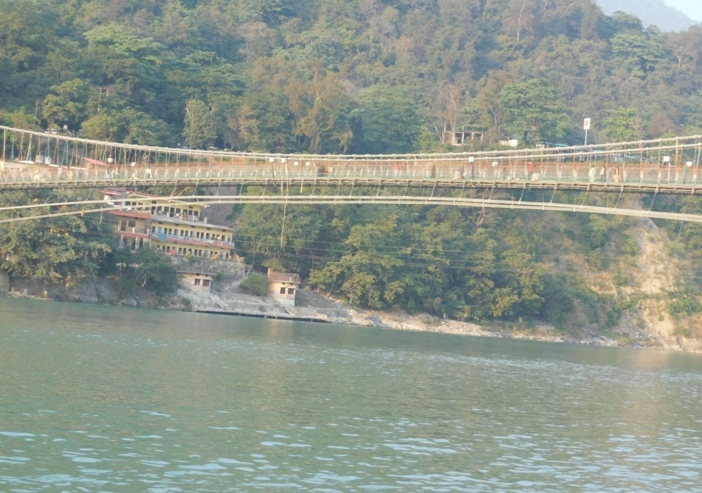
From this new bridge, we can see the old bridge, Lakshman Jhula. Then we took a local cab and went to the famous old hotel Chotiwala. Some 30 years back when I visited with my kids, we took food here. In Rishikesh, rafting sport is famous. Even our travels arranged this. Considering our age, we preferred to skip it.
Around 4 pm, we left Rishikesh and moved to Mussoorie. It is 70 km away from Rishikesh. It is a ghat road with sharp turnings and hairpin bends. We had a break at Dehradun for tea. Then we proceeded and reached Mussoorie around 8:15. Weather was quite chill; the temperature was around 9 degrees. Our accommodation was arranged at a hotel called Honeymoon Inn. The room was good. We finished our dinner and went to sleep.
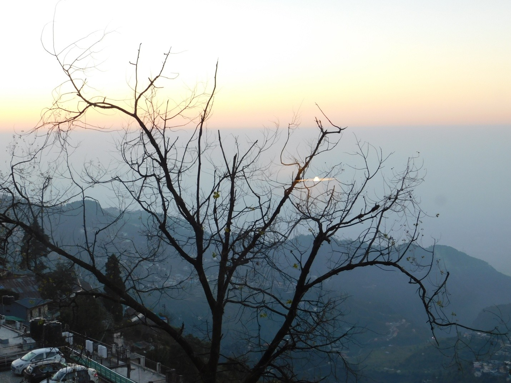
Early morning from the hotel room, the view of the sky was pretty beautiful. Altitude of this place is around 6,500 ft. Weather is pretty chill. Hotels or shops are at elevated places or downwards. So all the time we have to walk up or down to go anywhere. Roads are narrow. Cycle rickshaws are in use. Morning walk was pleasant. Then after breakfast, we proceeded to Kempty waterfalls. As usual, from the hotel to the bus parking, we went by cycle rickshaw and boarded the bus.
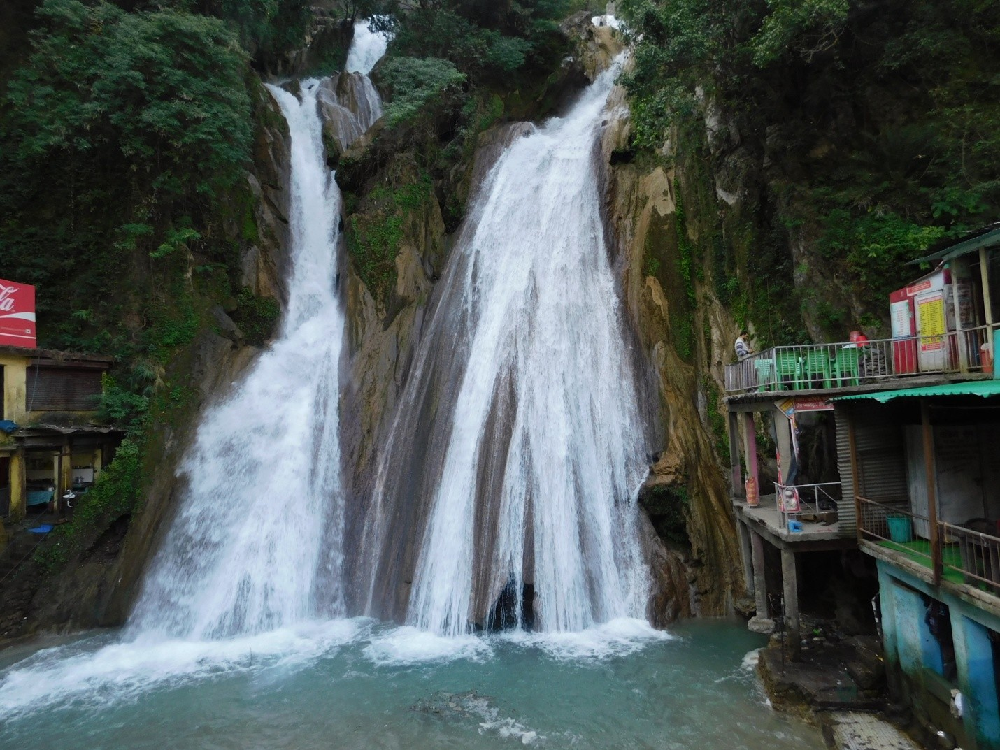
After about 45 minutes of travel, we reached the place. From there we walked through a narrow lane and reached the waterfalls, and we took a few photos. Then from there we went by a rope car and reached a spot close to the waterfalls. It was spectacular. We took lots of photos and even had video calls. Since Tanvi was online, we could share our experience. Then we returned back to the hotel and had our lunch. Until 4 pm we took rest.
At 4 pm we walked around 1 km and went to Gun Hill point through the rope car. This is one of the peaks in Mussoorie. In this peak, one Sani Mandir with a Hanuman deity is there. Also, telescopic view points are there. From this peak, we saw the beautiful sunset and had a nice tea.
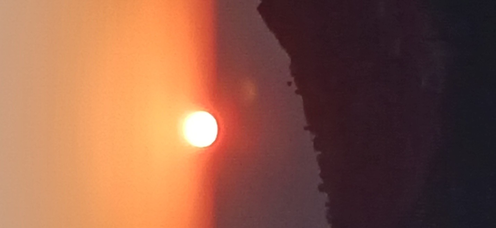
While returning to the hotel, we did some street shopping. Here woolen wears are cheaper. Also, wooden decorative pieces and wooden kitchen utilities are sold in plenty.
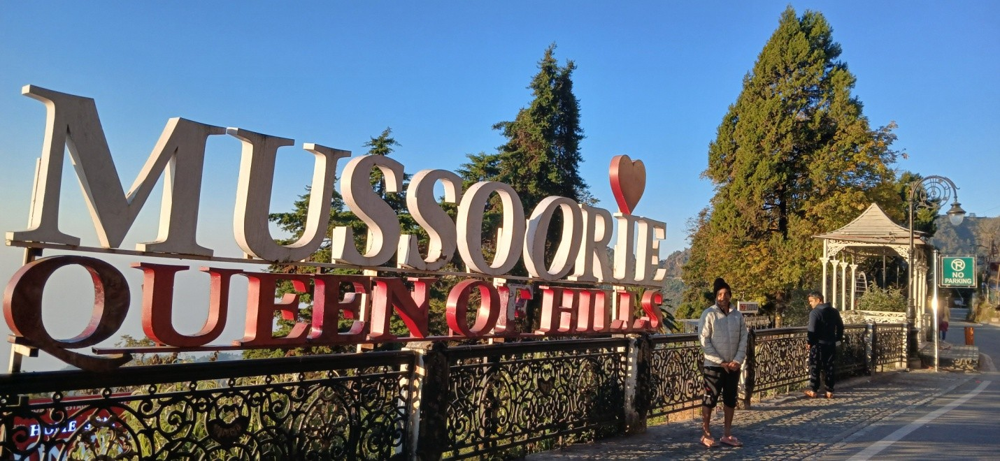
In the morning we got up early. The weather was very pleasant. I went for a walk. In the beautiful environment, walking was so pleasant. But it was scary to see lots of stray dogs and monkeys. Monkeys and dogs were fighting for a bread piece or a chapatti. Invariably monkeys were smart to grab the eatables from the dogs and escape.
After breakfast, we left Mussoorie and proceeded to Nainital. It was a long way, some 350 km away. Up to Haridwar, our tour bus was not good and so throughout we felt that the bus was just bumping. At Haridwar, we had our lunch and continued our journey. Around 4:30 in the evening, we had another break to have coffee. From Jim Corbett, the ghat road started, with some U-turns and hairpin bends. We reached Nainital around 8 pm. Weather was pretty chill. From the bus parking place, we were transferred to a smaller vehicle and we reached the hotel. The name of the hotel is Vintage Inn. Rooms were good. Dinner was delicious. Because of the room heater, we could comfortably sleep.
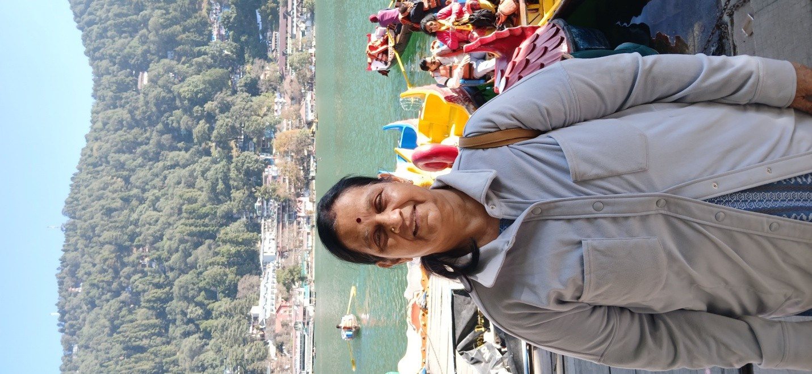
The day was quite bright and warm. It was not biting cold. After breakfast, we left in a car for Nainital Lake. Then we took an electric rickshaw and roamed around the lake. Then there was boat riding in Nainital Lake. Boating was for about 15 minutes. Then we visited the Naina Devi temple. This temple is one among the 51 Shakti Peeths. In this temple, other deities like Shiva, Hanuman, Radha Krishna, and Dashavatar are also there.
Then we walked to see the snow point. From the temple, the rope car boarding point is about one kilometer walk. They charge Rs 380 to travel to this point through the ropeway car. We can spend an hour at that peak point and return through the cable car. We went through the cable car. Fortunately, the weather was too good. No fog or clouds. Here there is a flower called Buransh. It is a kind of medicine. Juice of this flower is famous here. We had this juice.
There is a tower called Magic Tower 360. It is a mechanical revolving platform that takes people to a high altitude by slowly revolving. We can see the spectacular scenery of Nainital. Ticket fare is Rs 300 per head. We both went and took pictures and videos.
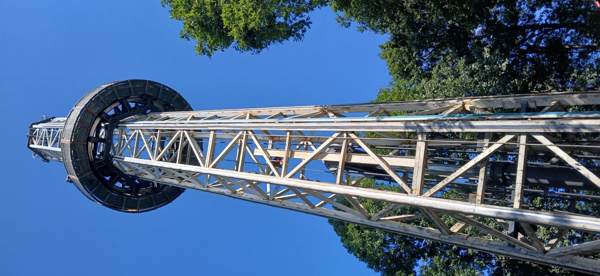
Kainchi DhamIn Nainital, there lived a Saint called Neem Karoli, and lots of followers are there. His Ashram is there in Nainital in a place called Kainchi Dham.
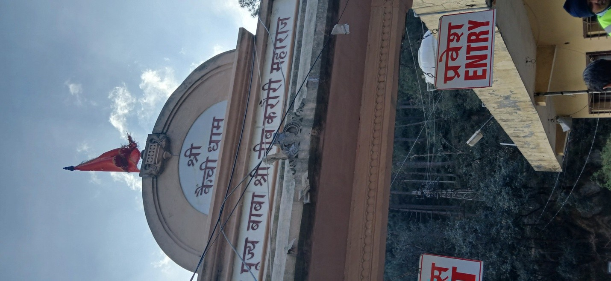
Since Veena didn't have any visiting schedule except shopping, we and one more family booked a cab and went to this place. A big queue was there, but quickly we could complete the darshan of his holy place.
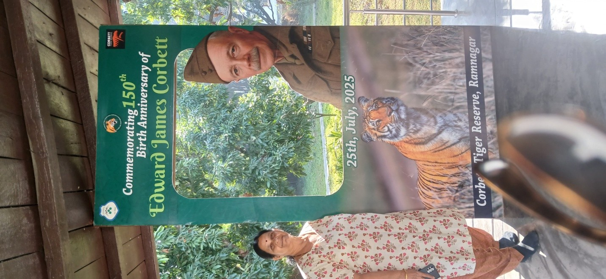
After breakfast, we left the Vintage Inn hotel, Nainital, and started for Jim Corbett. It is about 70 km away. On the way, we stopped at Kaladungi. Here is Jim Corbett's house, which was converted into a small museum. Jim Corbett was a social worker. After his education, he worked in the Railways and then joined the Indian Army and participated in the Second World War. He retired with the rank of Major and settled in Kaladungi. He purchased lands around his place and started agriculture, giving employment to the poor. He shared the yields with the employees of his firm. So people loved him and he became more popular.
Also, he was a wild animal lover. He became more popular after he shot down the man-eater Champawat which killed more than 400 people. He was also a writer. He published several books on wild animals. In this museum, some of his belongings and some write-ups about him are there. His paintings are also seen in the museum. After the museum, we continued our journey and reached Jim Corbett around 12. We were checked into Aura Resort. The room was good and spacious. Jim Corbett weather is not very chill like Nainital. After dinner, we proceeded to see the Dhangarhi museum. Here the wild animals which died naturally, or while fighting with other animals, are processed and kept. Taxidermy of a tiger is kept with a description that the tiger fought with an elephant the whole night and ultimately the elephant killed that tiger. In the museum, a small documentary film about the forest is shown. We spent an hour in this museum and returned back to the hotel.
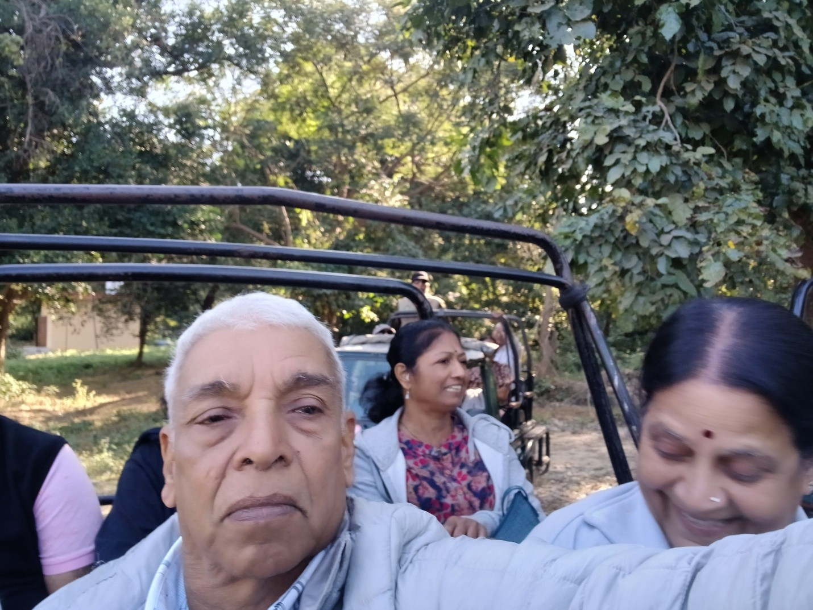
As per the travel itinerary, the visit was a forest safari. Usually, a time slot is allotted by the forest department. Every day there are two slots: one in the morning and one in the evening. We got only the afternoon session. In the morning there was no program and we got up leisurely and around 8:30 we had our breakfast. The resort was beautiful and we were roaming around. After lunch, by 1:30, we left the hotel for the forest safari. This safari is under the control of the forest department. They have six-seater jeeps. For every jeep, a forest guard will accompany. They have a very specific route and they never deviate from the route. Also, these jeep movements are monitored. Before leaving, persons' details are recorded before traveling in the jeep.
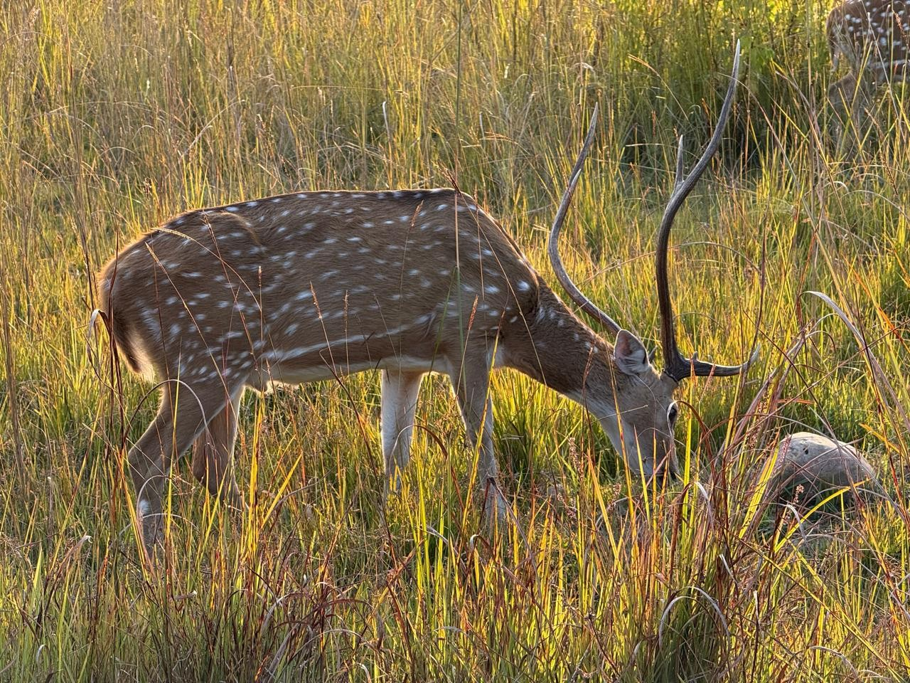
Persons are not allowed to get down from the jeep throughout the travel. In the forest, there is a guard room with proper fencing. There they allow you to get down from the jeep to avail washroom facilities. The safari duration is about 2 hours. This forest is not a plain one; it is surrounded by mountains. In this forest, elephants, cheetahs, tigers, and deer are seen. This forest is full of Sal trees. Also, we saw plenty of curry leaf trees. We roamed around for 2 hours but didn't see any wild animals. We saw deer in groups and different colorful birds. After two hours we returned back and boarded the bus to the hotel.
We got up leisurely and completed the packing. After breakfast, we left Jim Corbett around 9 am. Delhi is around 300 km away. After 3 hours of bus travel, we had a coffee break and continued our journey. The bus journey was not very comfortable. Around 1:30, we had our lunch and continued our journey. Around 5 pm, we entered Delhi and again had a coffee break. Before reaching the airport, the tour guide was showing all important monuments of Delhi like the Lotus Temple, Red Fort, Humayun's Tomb, Rashtrapati Bhavan, Prime Minister's home, Indira Gandhi museum, etc. Because of heavy traffic, we could reach Delhi Airport Terminal T2 around 7 pm.
Uma Shankar was in constant touch and guiding us to reach their home. Then from there, we took a cab and reached Uma Shankar's home around 8 pm. We were overwhelmed to realize their affinity and cordiality toward us. We were very homely and very comfortable throughout our stay.
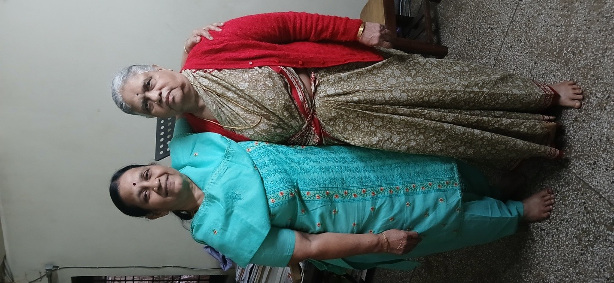
Uma prepared idli, sambar, and chutney for breakfast. After breakfast, we left for Julla Akka's home. Before lunch, I moved around Munirka market. Around 1 pm we had our lunch and took rest until 4 pm. From Jula Akka's home, we went to Sarojini market. Then from there, we took an auto and reached Uma Shankar's home. At night she prepared aloo paratha and a subji. Again chit-chatting and then slept.
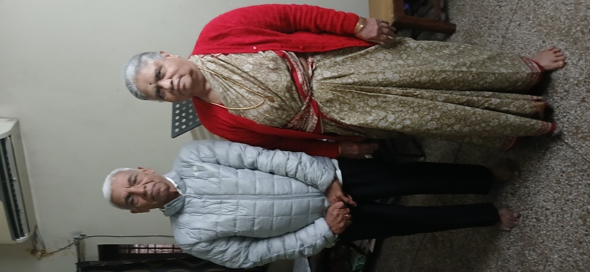
We didn't have any specific program. All they wanted was to take us for shopping. Until evening we were at home only. After tea, we took a cab and went to a nearby market area. Jula Akka wanted Uma to buy clothes for us. Uma also wanted to gift. So they purchased two T-shirts and two trousers for me and two sets of dress materials for Lakshmi. In that market, we tasted boiled sweet potato added with some masala and lemon juice. Also, we had pani puri. While coming back we took an open auto-rickshaw and reached home. For dinner, Uma prepared vegetable pulao.
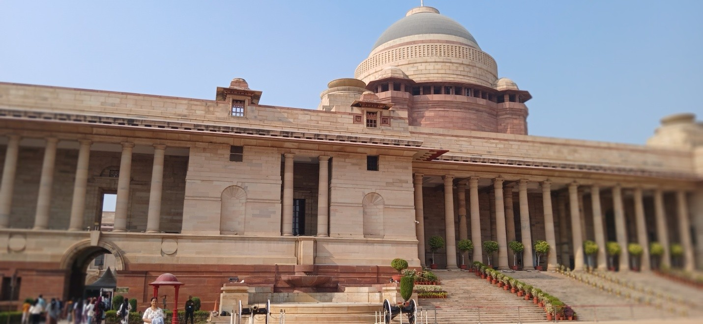
Hema arranged a pass to visit Rashtrapati Bhavan. The time slot given to us was 10:30 am. After our breakfast, we took an auto-rickshaw and left home around 9:15. We reached Gate no. 38 of Rashtrapati Bhavan around 10:15. After the initial formalities, we entered the Rashtrapati Bhavan premises and took a few photos. While entering the Rashtrapati Bhavan, we handed over the mobile phones.
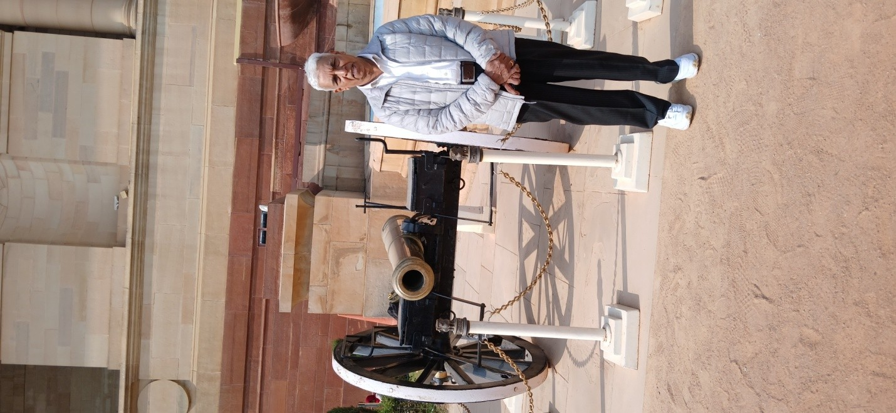
In our group, about 40 people were there. A guide was with us. After the entrance, the first showpiece was a beautiful goddess made out of Plaster of Paris with one thousand hands, presented by Vietnam. Then we visited Durbar Hall. It is just below the beautiful dome which we used to see from the outside of Rashtrapati Bhavan. In this hall only, every year the award ceremony takes place. Then we saw two halls opposite to each other. One is called Shrayu Hall, where delegates visiting from other countries used to meet the President, and the other hall is called Brahmaputra Hall. It is a dining hall used for delegates. Over this hall, a balcony is there and normally musicians used to play music while dinner or lunch is served.
Then through a corridor, we reached the famous Ashoka Hall. During British times, this hall was meant for ballroom dancing. The floor is wooden, under which springs are given for a cushioning effect. The roof is decorated with beautiful paintings. Presently this hall is used for photography sessions after every function like an award ceremony. While going to Ashoka Hall, we could see the Mughal Garden. This garden will open to the public during March and September. During that time, this garden will be full of beautiful roses and tulip flowers. Then we were taken to an art gallery where beautiful paintings are kept. After this visit, we returned back to the entrance and took an auto and reached home.
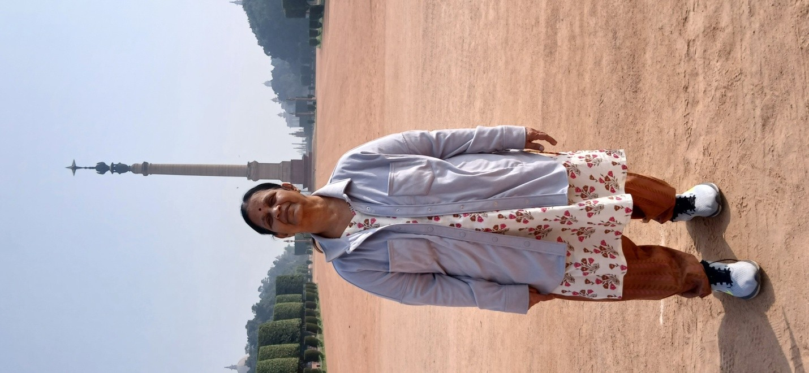
In the evening, Hema and Adithi came and we were chatting for some time. After our dinner, we took a cab and reached Airport Terminal 2. Fortunately, the IndiGo flight was at the right time and reached Pune early morning around 4 am. From the airport, we took a cab and reached home safely. The entire trip was memorable.
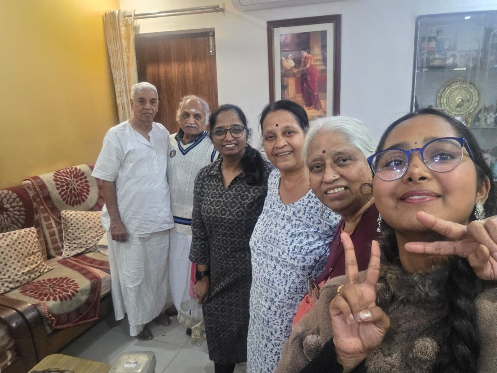
Trip Summary: The Uttarakhand Circuit
| Spiritual Heart | The Ganga Aarti at Har Ki Pauri and the tranquil infinity mirrors of the Radha Krishna Mandir in Rishikesh. |
|---|---|
| Mountain Majesty | Mussoorie’s Kempty Falls and the breathtaking sunset views from Gun Hill. |
| Lakes & Legends | Emerald waters of Nainital and the peaceful darshan at Kainchi Dham ashram. |
| Wilderness | The history of Jim Corbett at Kaladungi and the dense Sal forests of the National Park. |
| Family & Heritage | Heartfelt hospitality in Delhi and a grand tour of the historic Rashtrapati Bhavan halls. |